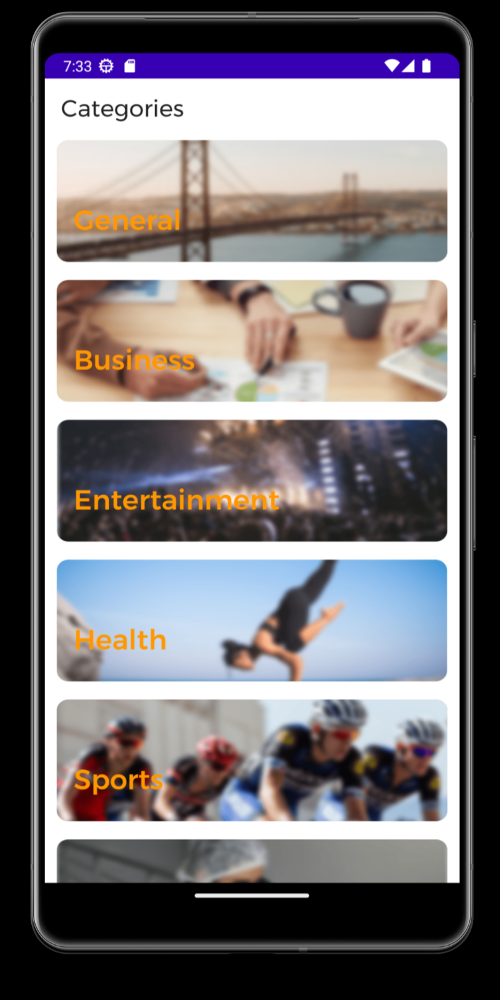
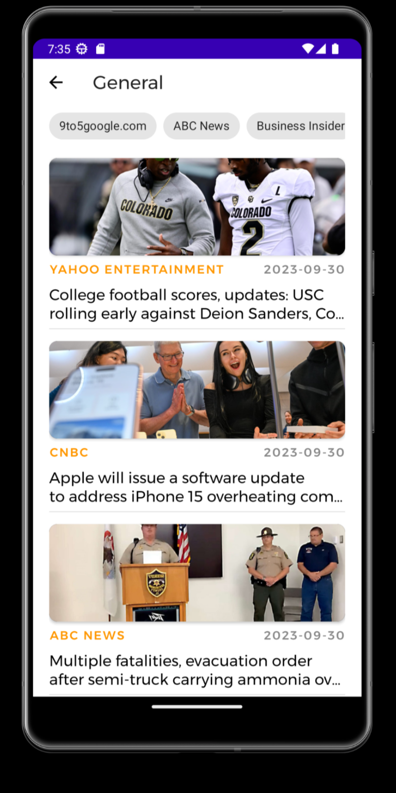
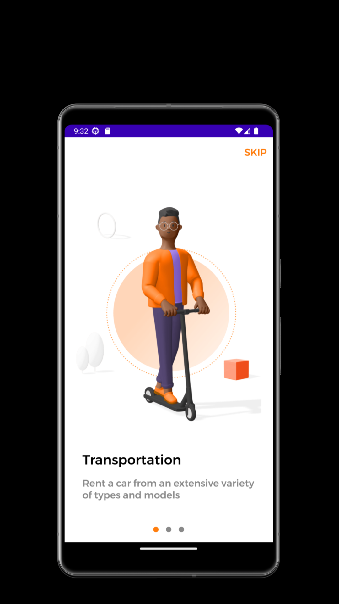
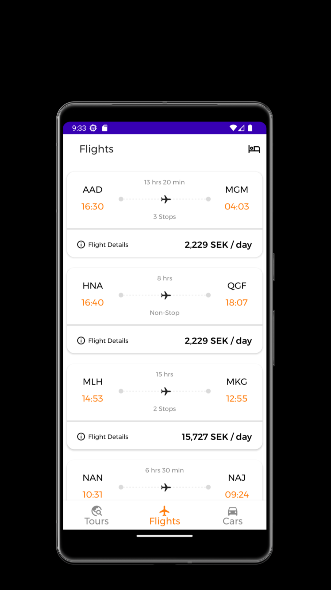
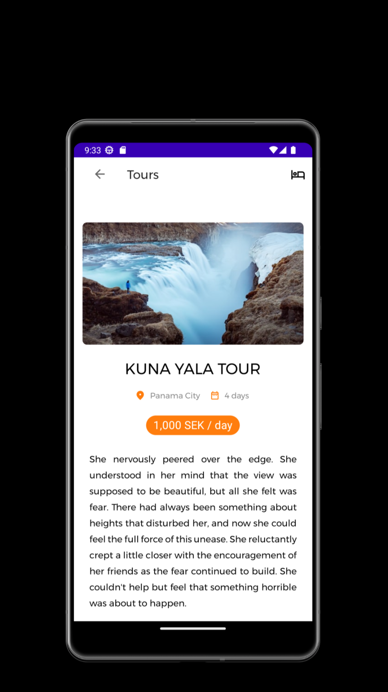
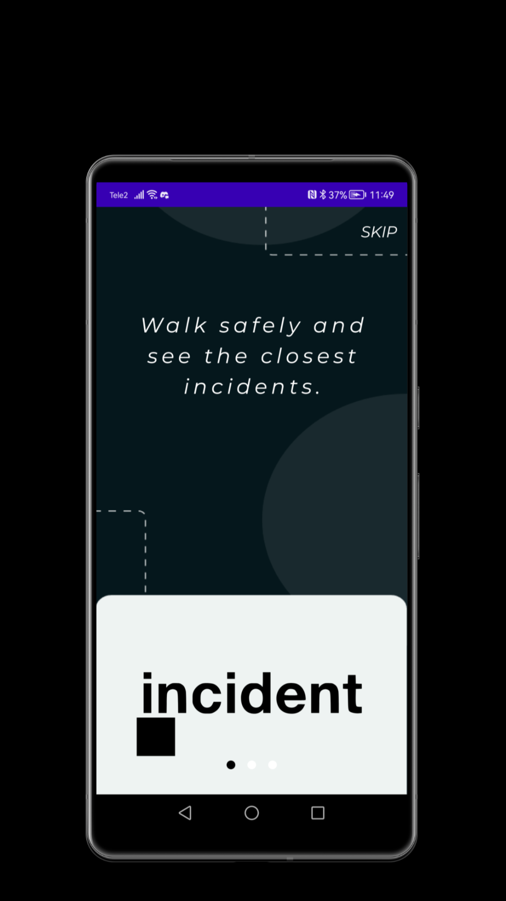
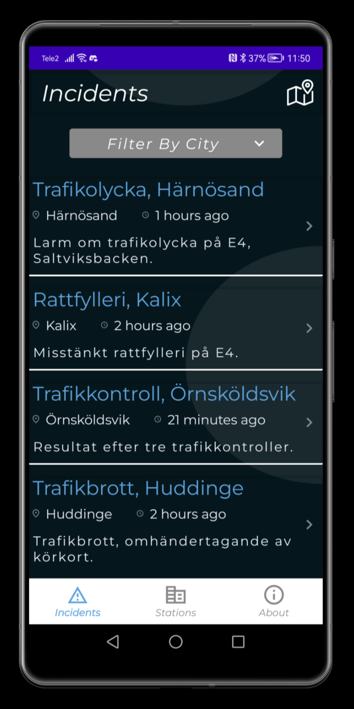
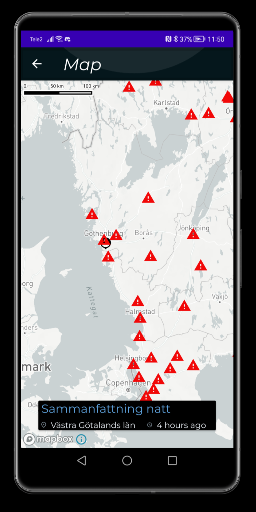

App Top News
I developed an application that allows users to view the most
relevant news by categories of a specific country, which by default
is set to the US. Users caSn easily switch between different
categories such as politics, sports, technology, and entertainment
to find the news that interests them the most.
Additionally, the application provides detailed information about
each news article, including the publication date, author, and a
brief summary.
Users can also click on a link to open the full article in their
browser, allowing them to read the complete story from the original
source. This application aims to provide a convenient and
comprehensive way for users to stay informed about current events
from around the world.
More



App Tour Guide
I developed an application that enables users to view tours,
flights, rental cars, and hotels stored in a database. Users can
access relevant details about these tours, flights, rental cars, and
hotels, such as pricing, availability, and customer reviews. The
application features a user-friendly interface that allows for easy
navigation and filtering of search results based on user
preferences.
Additionally, it includes a secure booking system that integrates
with various payment gateways, ensuring a seamless and safe
transaction process.
The backend is built with robust technologies to handle large
volumes of data efficiently, providing users with real-time updates
and accurate information.
More



App Police Incidents
I have developed an application that allows users to locate
incidents and police stations in a specific country, Sweden in this
case. The application provides a comprehensive database of
incidents, including details such as the type of incident, date,
time, and severity. Users can search for incidents based on various
criteria, such as location, date range, and type of incident. The
map features real-time updates, allowing users to see the most
current information available.
Additionally, the application enables users to pinpoint these
incidents and police stations on an interactive map, providing a
visual representation of the data.
Users can also get directions to the nearest police station and view
contact information for emergency services. The application aims to
enhance public safety by providing easy access to critical
information and helping users stay informed about incidents in their
area.
More